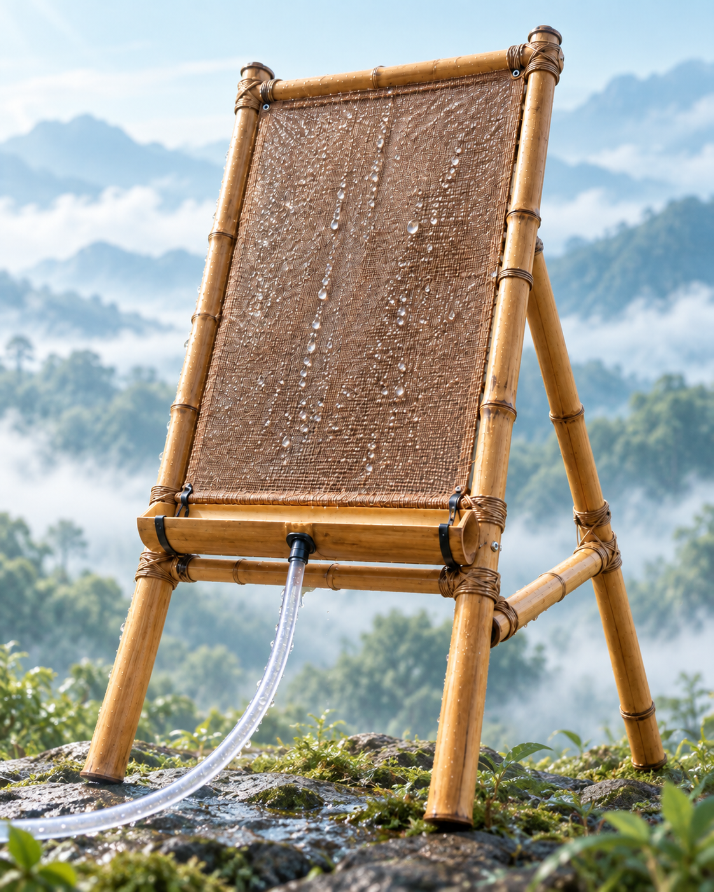
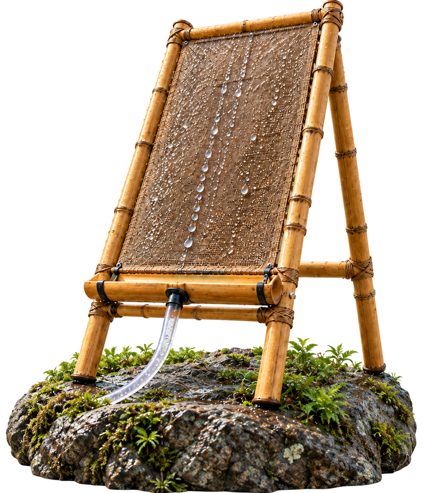

Sensor de humedad
Mide la humedad del ambiente para optimizar la captura.
Panel biodegradable a base de bambú y pseudotallo de plátano, con sensores IoT y análisis predictivo para monitorear la captación de agua proveniente de la niebla de forma sostenible.
Explorar más
Integra sensores y monitoreo IoT para una captura de agua de niebla más eficiente y sostenible.
Mide la humedad del ambiente para optimizar la captura.
Registra la temperatura para un análisis más preciso.
Malla de origen biológico diseñada para capturar la niebla de forma eficiente y sostenible.

Transmite datos en tiempo real para un seguimiento continuo y remoto.
Procesa los datos para anticipar condiciones y mejorar el rendimiento.
Sistema de captación y almacenamiento de agua de niebla lista para su aprovechamiento.
BioFog integra el diseño del panel biodegradable, la construcción del prototipo, pruebas experimentales, monitoreo IoT, análisis de datos y resultados, para transformar la niebla en agua útil.
Desarrollo de materiales biodegradables y diseño estructural para la captación de niebla.
Ensamblaje del panel e integración de sensores IoT para el monitoreo en tiempo real.
Evaluación del rendimiento del panel en condiciones controladas de niebla para validar su eficiencia.
Captura de datos en tiempo real de humedad, temperatura y volumen de agua recolectada mediante sensores.
Análisis de datos y validación del impacto del sistema en la captación de agua de niebla.
Encuentra respuestas a las preguntas más frecuentes sobre el panel biodegradable, el monitoreo IoT, las pruebas de laboratorio y los resultados de BioFog Smart.
BioFog Smart es una propuesta de investigación que integra un panel biodegradable captador de niebla, sensores IoT y análisis predictivo para monitorear y optimizar la captación de agua de niebla de forma sostenible.
Permite anticipar las mejores condiciones de captación y estimar la eficiencia hídrica del panel. Con más de 1000 registros, el modelo predictivo ayuda a decidir dónde y cuándo conviene instalar el sistema.
La niebla atraviesa una malla de bambú y pseudotallo de plátano, donde las gotas se condensan sobre las fibras. El agua escurre por la canaleta hasta el depósito, sin usar energía ni materiales plásticos.
Cuatro variables en tiempo real: humedad relativa, temperatura, velocidad del viento y volumen de agua recolectada. Los sensores conectados a Arduino envían los datos de forma continua y remota.
Más de 50 pruebas en condiciones controladas, con una recolección máxima de 6700 mL de agua de niebla en una jornada y un prototipo funcional validado en campo.